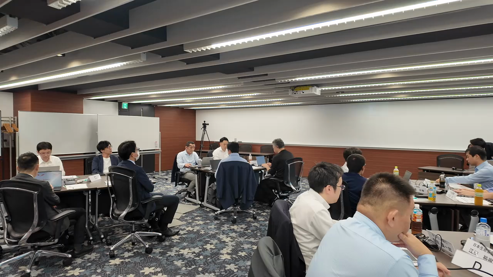
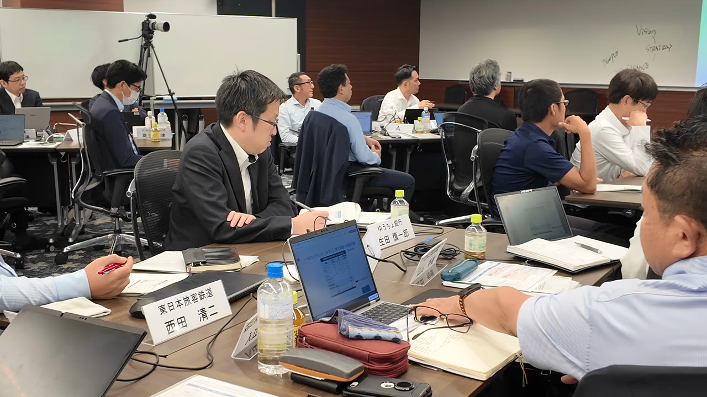
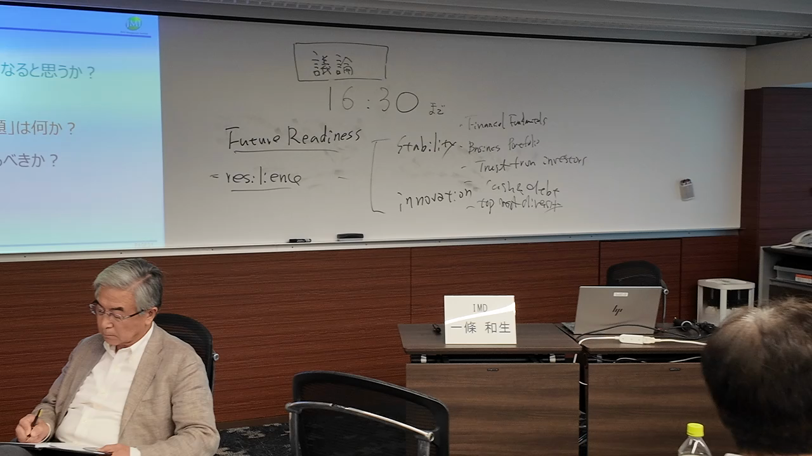
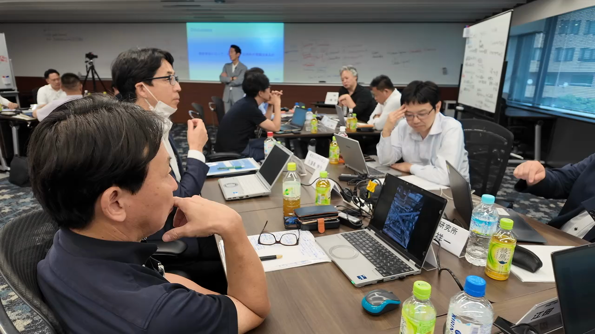
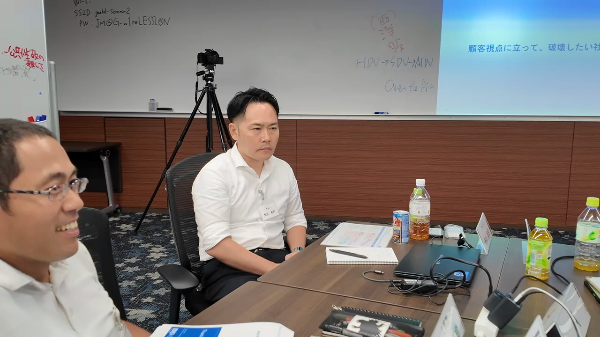
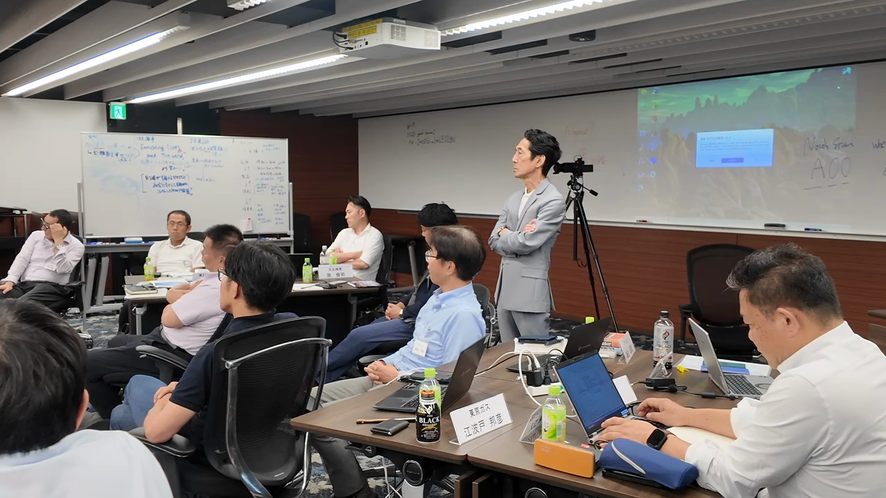
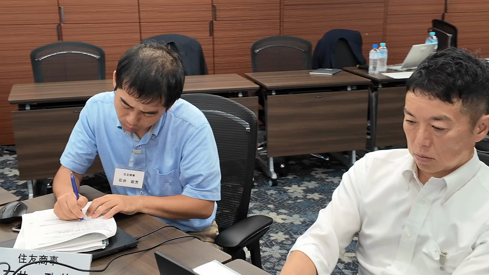
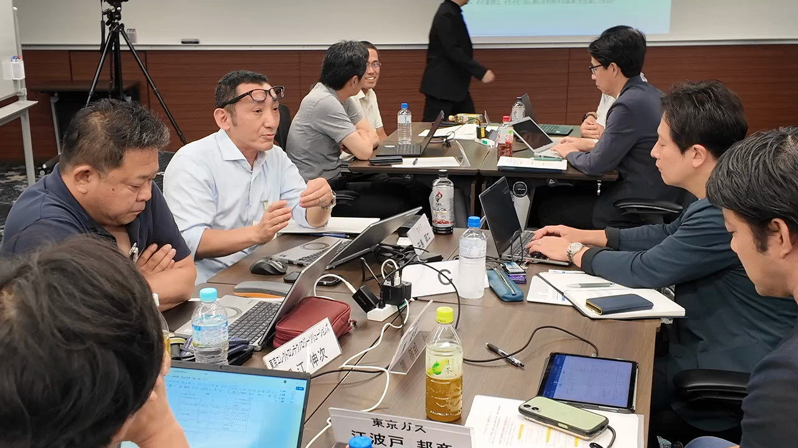
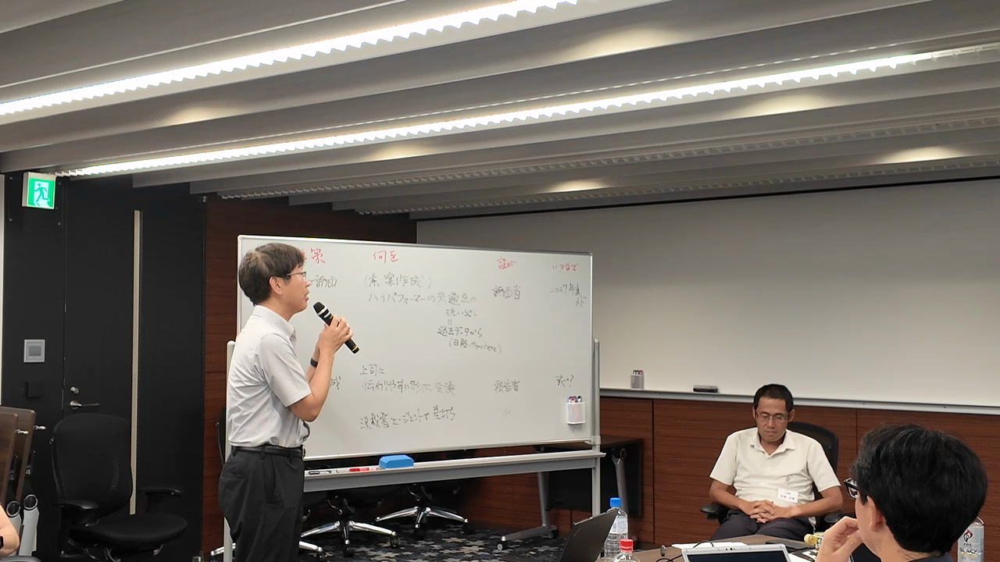

JMI EMC第37期の開講3日間は、経営知識を一方的に学ぶための場ではない。次世代経営者候補が自分の使命と判断軸を言語化し、異なる企業の参加者との議論を通じて前提を問い直し、自社で起こすべき行動を考えるための出発点である。
KEY POINTS
- — JMI EMC第37期は、異なる企業から集まった次世代経営者候補が、第一線の研究者・経営者から学び、約9か月にわたって議論と実践を往復する経営人材育成プログラムである。
- — 開講3日間では、日本企業の課題、経営者の使命、地政学、AIと人間の役割、意思決定、投資家対応、経営者の実践知を扱った。
- — 参加者の学びは知識の獲得にとどまらず、自らの判断の前提を問い直し、経営と現場をつなぎ、周囲を巻き込む行動へ向かっていた。
- — 派遣企業にとって重要なのは、研修を個人の経験で終わらせず、学びを試す課題と対話の機会を社内につくることである。
JMI EMC第37期とは

静かな会場で、参加者たちはそれぞれの席についた。資料を開く音、言葉を待つ視線、ペンを握る手。次の経営を担う準備は、知識を増やすだけでは始まらない。自分が会社から何を託され、どのような未来を実現したいのかを問い直すことから始まる。
一般社団法人日本能率協会 経営人材・革新センターが実施する「JMI EMC第37期」は、2026年7月16日に開講した。異なる企業から集まった次世代経営者候補が、第一線の研究者・経営者から学び、互いの経験を持ち寄って議論する。約9か月にわたる学びの入口となった3日間を、会場での取材と参加者の言葉から振り返る。
開講3日間では、何が問われたのか
今回の3日間で扱われたのは、日本企業の課題と経営者の使命、地政学の変化、AIと人間による知識創造、AI時代の意思決定、投資家対応、そして経営者の実践知である。一見すると、それぞれ独立したテーマにも見える。
しかし、会場で繰り返し問われていたのは一つだった。変化を前にした経営者は、何を見極め、誰と対話し、何を決めるのか。そして、その判断を自社の未来へどうつなげるのかという問いである。
3日間の講義は、知識を受け取って終わる構成ではなかった。講義で得た視点をグループへ持ち込み、他社の経験と照らし合わせ、再び自分の課題へ引き寄せる。インプット、対話、内省を往復することで、抽象的なテーマが自社で扱うべき具体的な問いへ変わっていった。
次世代経営者候補に、なぜ使命の言語化が必要なのか
初日は、プログラムガイダンスと参加者の自己紹介から始まった。所属する業界も、これまでのキャリアも異なる。しかし、会社から期待を受け、経営と現場の間で重い役割を担っている点は共通している。
参加者は一人ずつ、自らのミッションと、この場で得たいものを語った。まだ互いの距離を測るような緊張がある一方、その言葉には、現在の立場に対する責任と、ここから変わりたいという意思がにじんでいた。
普段、会社の中では役職や担当領域によって「答える側」に置かれることが多い人たちである。部下から判断を求められ、経営から方針を受け取り、限られた情報の中で組織を動かしている。だからこそ、自分の判断の前提そのものを立ち止まって検討する機会は、決して多くない。
EMCの開講は、そうした参加者をもう一度「問いを持つ側」へ戻す時間でもあった。自社での実績や肩書を一度横に置き、自分は何を分かっていて、何をまだ分かっていないのかを確認する。自己紹介は単なる顔合わせではなく、9か月を通じて向き合う課題を言葉にする最初の機会になっていた。

一條先生による「日本企業の課題と経営者の使命」の講義では、目の前の業務を超えて、企業と社会をどのように捉えるかが問われた。参加者は講師の言葉を追いながら、手元の資料へ絶えずメモを書き込んでいく。

なぜ、異なる企業の経営者候補と議論するのか
グループ討議が始まると、会場の空気は変わった。参加者は自社での経験を持ち寄り、意見を述べ、問い返す。ここでの目的は、正解を早く出すことではない。自社の中だけでは気づきにくい思考の癖や暗黙の前提を、他者との議論によって浮かび上がらせることにある。

社内の議論では、過去の経緯、部門間の関係、役職上の遠慮が、知らず知らずのうちに発言の範囲を決めることがある。同じ会社で共通言語を持っていることは強みである一方、「そもそも、その前提は正しいのか」という問いが生まれにくくなることもある。
EMCには、同じ会社の常識を共有していない参加者がいる。ある企業では当然とされる判断が、別の企業ではまったく異なる基準で捉えられる。業界構造や顧客、規制、組織文化が違えば、同じ問題に対する優先順位も変わる。
重要なのは、どちらが正しいかを決めることではない。自分が無意識に置いていた前提を発見し、選択肢を増やすことだ。他社の事例をそのまま持ち帰るのではなく、「なぜ、その会社ではその判断が成り立つのか」を考える。すると、自社で変えるべきものと、守るべきものの違いが見えやすくなる。
この意味で、異業種との議論は情報交換にとどまらない。経営者候補が自分の判断軸を検証するための「他流試合」なのである。

AI時代に、経営者が担うべきことは何か
2日目は、地政学の変化と日本企業の変革、そして「AIと人間による知識創造」をテーマに学びを深めた。
AIを経営にどう活用するかは、多くの企業に共通する課題である。しかし、技術の可能性を知るだけでは意思決定にはつながらない。AIに委ねられるものは何か。人間が担い続けるべきものは何か。参加者は講義とグループワークを往復しながら、自社の現実へ問いを引き寄せていった。
AIが提示する答えの精度が上がるほど、経営者に残される仕事は少なくなるのだろうか。会場での議論から見えてきたのは、むしろ逆の可能性だった。情報の収集や整理をAIが支援できるようになれば、「何を問うのか」「どの価値を優先するのか」「結果に誰が責任を持つのか」が、これまで以上に重要になる。
効率だけを基準にすれば、見落とされるものがある。短期的な合理性と、中長期の信頼が一致しない場合もある。社員、顧客、投資家、社会など、異なる利害を持つ人々に対し、何を守り、何を変えるのかを説明しなければならない。
AI時代の経営者に求められるのは、機械より速く答えることではない。問いを定め、判断基準を示し、その結果が組織と社会へ及ぼす影響に責任を持つことである。

“なんとなくモヤモヤ持っていたことが、経営学の観点で整理できると改めて実感しました。”
特に印象に残ったのが、AIと人間の役割をどう捉えるかという議論だった。
“AIができることと、人間がやらなければならないこととの境界線が、こういうところにあるのだと理解できました。”

経営と現場をつなぐミドルには、何が求められるのか
参加者にとって、もう一つの重要な論点となったのが、経営と現場をつなぐミドルの役割だった。
“部長は経営と現場の間に入ってやらなければならないと、なんとなく分かっていました。これから会社を、何が起きてもレジリエンスな状態にしていく。その中で部長が果たす役割によって、会社の出来不出来が決まると感じました。”
ミドルは、経営の方針を現場へ伝えるだけの中継点ではない。現場で起きている変化や小さな兆候を捉え、経営が判断できる形へ翻訳する役割も担う。上から下へ、下から上へ情報を流すだけでなく、部門を越えて人をつなぎ、組織の知識を更新していく。
経営戦略が優れていても、現場の行動へ変換されなければ成果にはつながらない。反対に、現場に重要な気づきがあっても、経営の意思決定へ届かなければ組織全体は変わらない。両者の間に立つ部長層が、何を読み取り、誰を巻き込み、どの言葉で伝えるか。それは、変化に強い会社をつくる上で大きな意味を持つ。
参加者が語った「ミドルダウン・ミドルアップ」という言葉は、その双方向の働きを表している。経営の意図を現場の行動へ翻訳すると同時に、現場の知見を経営の判断材料へ変えることが、ミドルの重要な役割である。

学びを自社の行動へ、どう変えるのか
3日目は、「AI時代における意思決定」、投資家対応、経営者講演へとテーマが広がった。参加者は自らの判断軸を確かめるように、講師や仲間へ問いを投げかけた。
元TDK会長・石黒氏によるエグゼクティブ・セッションを聞いた東京ガスの江波戸氏は、終了直後の気持ちを「ちょっと興奮しています。ワクワクしています」と表現した。
“やりたいことを成し遂げていく責任と、周りの期待への応え方に、非常に参考になることがたくさんありました。”
特に心に残ったのは、立場や役割が違っても対等に向き合い、同じ目的へ進む仲間を増やすという仕事のあり方だったという。

参加者の声として、自社が買収した会社の人的ネットワークを本体へ十分に取り込めていないという、自身が向き合う課題にも言及した。制度だけで組織をつなぐのではなく、人と人との関係をどう築くか。講演で得た示唆が、自社で改善すべき具体的なテーマと結びついていた。
この発言が示しているのは、学びが一般論のまま終わらなかったということだ。「仲間を増やす」という言葉が、自社の統合後のネットワークという具体的な課題へ接続されている。講師の経験を正解として模倣するのではなく、自分が置かれた状況に置き換え、最初に働きかける相手を考える。知識が行動へ変わるのは、この翻訳が起きたときである。

9か月の学びは、どのように変化へつながるのか
開講3日間で、参加者が完成した答えを手にしたわけではない。むしろ、自分がこれから考え続けるべき問いが、以前よりはっきり見え始めている。
参加者の多くは、会社へ戻ったら、まず身近な社員へ学んだ内容を共有すると話した。
“せっかく得たものを、そのまま持っているだけでは意味がありません。自分たちの会社なら、どのように実践できるかを考え、日々の業務で生かしていきたいと思います。”
学びを個人の理解で終わらせず、周囲との対話へ変える。自社で実践できる形へ翻訳し、最初の行動を起こす。経営者候補に求められるのは、知っていることの多さだけでなく、組織の中に変化を生み出す力である。
第一線の研究者・経営者から知を得る。異なる企業の同格人材と議論する。自分の使命と判断の前提を問い直す。そして、自社へ戻って行動に変える。この循環を9か月にわたって繰り返すことが、JMI EMCの学びの核になる。
派遣企業は、参加者の学びをどう支えるべきか
経営人材育成の成果は、研修直後の満足度だけでは測りにくい。参加者が新しい言葉を覚えたかではなく、会社へ戻った後に問いの立て方が変わったか、関係者を巻き込む範囲が広がったか、重要な局面で異なる選択肢を示せるようになったかが問われる。
そのため、参加者本人だけでなく、派遣する企業側にも役割がある。学んだ内容を報告として受け取るだけでなく、どの課題で試すのか、誰と共有するのか、どのような変化を期待するのかを継続的に対話することが重要になる。
初日に手渡された「上司からの手紙」は、会社からの期待を言葉にする仕掛けだった。その期待が9か月後にどのような行動や成果へ結びついたのか。参加者と派遣元が節目ごとに振り返ることで、研修は個人の経験ではなく、組織の変化を生む投資になっていく。

JMI EMC第37期に関するFAQ
JMI EMC第37期は、どのようなプログラムですか
異なる企業から集まった次世代経営者候補が、第一線の研究者・経営者から学び、参加者同士で議論しながら、自社での実践へつなげる経営人材育成プログラムである。第37期は2026年7月16日に開講し、約9か月にわたって学びを深める。
開講3日間では、何を学びましたか
日本企業の課題と経営者の使命、地政学の変化、AIと人間による知識創造、AI時代の意思決定、投資家対応、経営者の実践知を扱った。講義だけでなく、グループ討議を通じて、それぞれのテーマを自社の経営課題へ引き寄せて考えた。
異業種の参加者と学ぶ価値は何ですか
自社では当然と思っていた判断の前提を、異なる業界・企業の視点から検証できる点にある。他社の正解を持ち帰るのではなく、判断が成り立つ背景を比べることで、自社で変えるべきものと守るべきものを見極めやすくなる。
AI時代の経営者に求められる役割は何ですか
AIより速く答えることではなく、何を問うのか、どの価値を優先するのか、結果に誰が責任を持つのかを明確にすることである。AIを情報収集や整理に活用しながら、判断の意味を説明し、組織と社会への責任を引き受ける役割がより重要になる。
派遣企業は、研修成果をどう生かせますか
研修報告を受け取るだけでなく、学びをどの経営課題で試すか、誰と共有するか、どのような行動変化を期待するかを参加者と継続的に話し合うことが重要である。学びと職場での実践を往復できる環境が、個人の成長を組織の変化へつなげる。
まとめ
JMI EMC第37期の開講3日間で始まったのは、答えを覚える学びではない。自分の使命を言葉にし、異なる視点との議論によって判断の前提を問い直し、自社での行動へ翻訳する学びである。
この循環は、一度で完成するものではない。自社で試し、思うように進まなかった理由を考え、再び仲間との議論へ持ち込む。異なる視点を受け取り、次の行動を選ぶ。9か月という時間は、知識を積み上げるためだけでなく、学びと実践を往復するためにある。
JMI EMC第37期の9か月は、始まったばかりだ。
EDITORIAL NOTE
- 取材対象：JMI EMC第37期 開講3日間
- 取材日：2026年7月16日から18日
- 実施主体：一般社団法人日本能率協会 経営人材・革新センター
- 制作方法：会場映像と参加者インタビューをもとに構成
- 掲載写真：会場で撮影した動画素材からキャプチャ